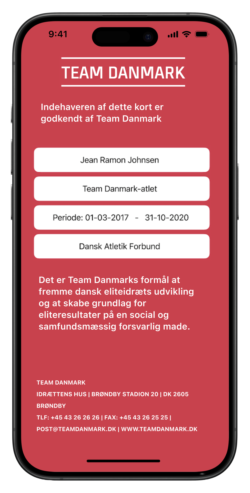

jGit
A personal Git client focused on fast state overview and safer daily repo work.
Software, automation and technical systems that have to keep moving outside the screen. The goal is dependable operation with less drag between people, process and equipment.
The common pattern is the same whether the output is software or a physical side quest: observe the workflow, identify the friction, and leave behind a more useful layer.
A personal Git client focused on fast state overview and safer daily repo work.
Turns raw lactate data into something coaches and athletes can actually use.
Routes form submissions directly into Discord so nothing waits in a dead inbox.
A continuous-life simulation exploring behavior, emergence and algorithmic texture.
A Brood War bot shaped by timing windows, pressure and real-time tradeoffs.
A utility-first 3D print built to stay rigid, ride clean and simply do its job.
Dashboards that decorate uncertainty, interfaces that hide the real state, and automation that looks smooth until reality touches it.
Useful defaults, clear states, calm operation and tools that still make sense when people are tired or under pressure.
The path runs through software, operations, engineering studies and elite sport, but the underlying thread is still systems thinking.
Junior Automation Engineer working where software, PLC logic and physical equipment meet.
Process optimization and IT projects with a strong bias toward dependable operation.
Technology Management and Marine Engineering in Svendborg.
Hands-on software work with architecture decisions that had to stay readable.
University of Southern Denmark, with the technical foundation still visible in current work.
Adidas and Team Danmark. High-performance structure, pacing and execution under load.

Before software and automation full-time, there were years of national and international middle-distance competition.
Transitioned into cycling after my athletics career where i rode in the danish A category.
If there is a project, role or problem space where software, process and real-world execution overlap, that is usually where the conversation gets interesting.